By: 3Forty Media | Follow me on Themeforest | Follow me on Twitter | Follow me on YouTube
Thankyou for purchasing Cannix, I really hope you enjoy using Cannix as much as I enjoy developing it.
This document will help you get your theme installed and setup but if you do have questions please leave a comment or send me an email via my profile page.
If you love Cannix, please take a moment to rate it it really helps. Thanks so much!
Once you have downloaded the zipped package to your computer, you will need to extract it to a location you choose. Then simply open that extracted folder and you will see Cannix.zip, this is your theme, and we just need to install it.
Login to your WordPress Admin and go to: Appearance > Themes.
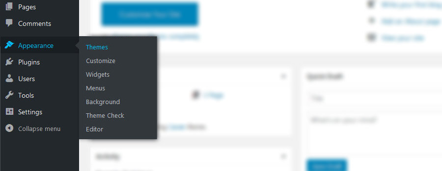At the top of the screen click Install Theme. Next at the top of the screen click Add New and then click the Upload Theme button at the top of the screen. Click the browse button and locate Cannix.zip select it and press the Install Now button
Once installation is complete click Activate to activate the theme.
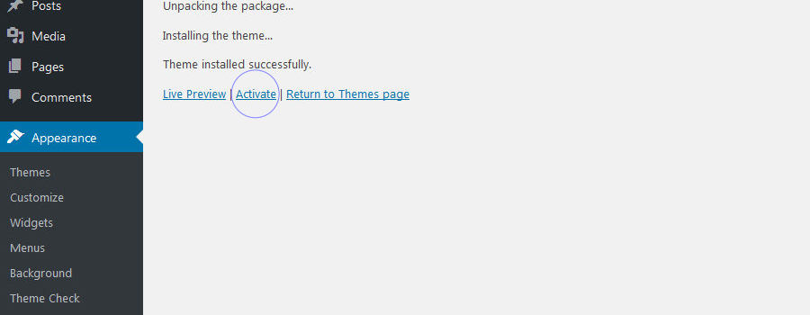Extract Cannix.zip and upload the extracted Cannix folder to your wordpress installation themes folder /wp-content/themes/
Finally you need to activate the theme. Go to: Apperance > Themes and click Activate on the Cannix theme
If this is a fresh or first time installation you may find it helpful to import the data from the demo. I have supplied an XML file in your download that contains posts, comments and pages with the option to download associated media. To import this file go to: Tools > Import and Click Run Importer
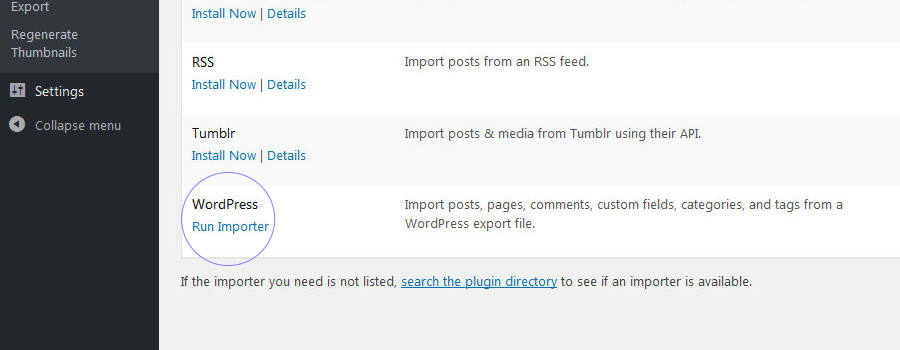Click the Browse button and locate the demo-data.xml file inside your download folder. Next click Upload file and import. Once the import is complete you will be asked if you would like to import media, this will download all the associated media for the posts and pages.
All post images are from Unsplash or Pexels and are licensed CC0.
Updating from v1.1 to v1.2 requires the installation of new plugins and re-configuration of some settings and widgets.
Step by step guide to updating Cannix
Now you will need to head on over to the Customizer Appearance > Customize and configure the new settings for each Cannix panel and save.
You can now Delete 340Media Theme Plugins
If you find that your theme is not displaying correctly after upgrading, update your settings in every Customizer Panel and Widget. This will update your database with the new settings
Cannix requires a few essential plugins to beautify your theme with the features you see on the demo. Once you have installed your theme you will be prompted to download and install some required plugins and some recommended plugins.
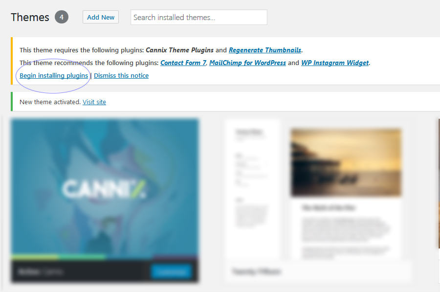Click begin installing plugins. This will take you to the Install required plugins page. To begin installing plugins, check each plugin you want to install and select Install from the drop down menu. This will install your plugins.
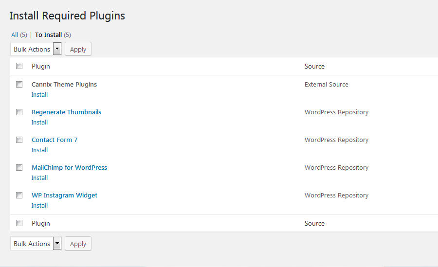Cannix Theme Plugins
This plugin is a collection of theme functions that provide all the good stuff for your theme; featured slider, post share buttons, post carousels and meta boxes
Regenerate Thumbnails
This plugin enables you to batch resize all your thumbnails and feature images to the size used by Cannix. I highly recommend this plugin if you want to get the best out of Cannix.
All other plugins are supported by Cannix but it is your choice whether you install them or not
Once installed go to Plugins > Installed Plugins and click activate on each plugin you just installed.
Now your theme is installed and you have downloaded and activated at least the essential plugins. At this point I recommend regenerating your thumbnails which will create the sizes we need for your theme without changing or deleting any other sizes you already have. Let's do that now. Click Tools > Regenerate Thumbnails
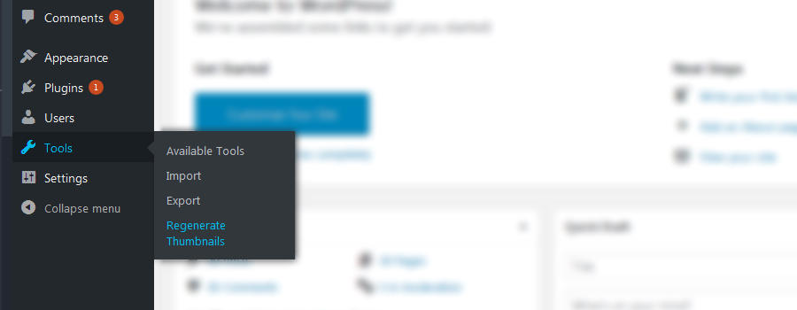All you have to do is click Regenerate Thumbnails for All x Attachments, then wait as your new thumbails are generated. Once complete you can view your homepage and see all your existing post thumbnails resized for your theme. Now you can head on over to the customizer and start updating settings.
Cannix comes with several theme specific customization options. These are located in the WordPress Customizer which can be located in Apperance > Customize. All Cannix options are labelled Cannix: Setting Name. These options allow you to configure your theme and turn on/off included features
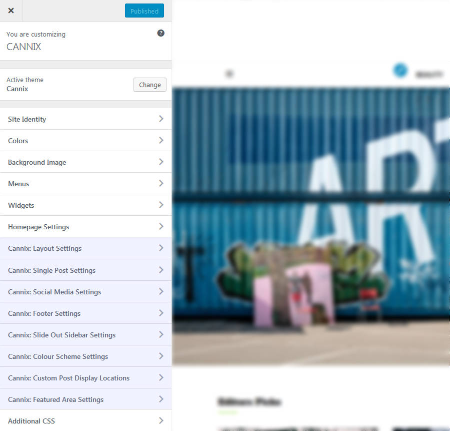* Install and activate the recommended Cannix theme Plugins if you do not see these options
We will go into more detail on some of these below, but before we do that lets look at the Site Identity setting and in particular choosing the correct logo for your blog.
Cannix is designed from the outset to support high resolution displays as standard. Whatever logo you upload Cannix will scale it down by 50%, this will then look great on high resolution displays. To ensure that your logo looks good across both standard and high resolution displays and at the size you want it to be, you need to upload a logo that is twice the size you want it displayed. Here's an example: Appearance > Customize > Site Identity
1. Let's say this is the size you want your logo on all displays
2. This is the size you will need to upload, it is twice the size of the above logo
3. Cannix will scale the large logo down to this size
You can upload any orientaion logo (vertical/horizontal) and Cannix will scale it down by 50% and centralize it both horizontally and vertically
Cannix supports four post layouts for your hompepage. Appearance > Customize > Cannix: Layout Settings
You can also choose to show or hide the sidebar
Grid and Masonry will display 2 columns when the sidebar is enabled and 3 columns when the sidebar is disabled
Cannix includes 3 different featured post type options. Appearance > Customize > Cannix: Featured Area Settings
Additionally you can select a category to filter the results even more, for example selecting Recent Posts and a Category will display the most recent posts from the selected category.
You can also enter specific post ID's seperated by a comma (for example 18,256,23). If you enter specific post ID's all other settings will be ignored.
Cannix supports four post layouts for the archive. Appearance > Customize > Cannix: Layout Settings
You can also choose to show or hide the sidebar
Grid and Masonry will display 2 columns when the sidebar is enabled and 3 columns when the sidebar is disabled
Cannix includes multiple locations to display custom post loops: Before Content, After Content and Category Header. Additionally these can be setup as carousels if you want to display lots of posts. You have 4 post type options. Appearance > Customize > Cannix: Custom Post Display Locations
Additionally you can select a category to filter the results even more, for example selecting Recent Posts and a Category will display the most recent posts from the selected category.
You can also enter specific post ID's seperated by a comma (for example 18,256,23). If you enter specific post ID's all other settings will be ignored.
To activate the post carousel simply set "How many posts do you want to display" to a greater value than "How many posts to show per row". For example display 6 posts with 3 per row will activate the carousel.
You can change the core colour scheme and accent colours of Cannix. Appearance > Customize > Cannix: Colour Scheme Settings
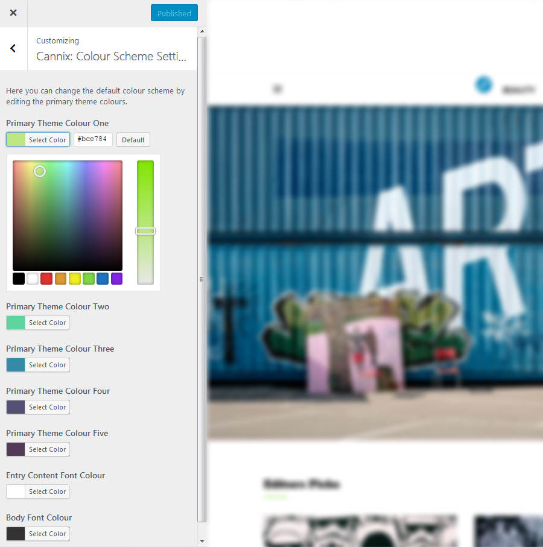The customizer provides a quick and easy and way to change your colour scheme. For major style changes I recommend installing the child theme and writing your own CSS
As well as the theme colour editor Cannix allows you to change the colour of your posts at an individual level. In the new post/edit post page you are able to change the article background colour and the article entry text colour.
You can mix and match global colour changes in the customizer with individual post colour changes to highlight selected posts
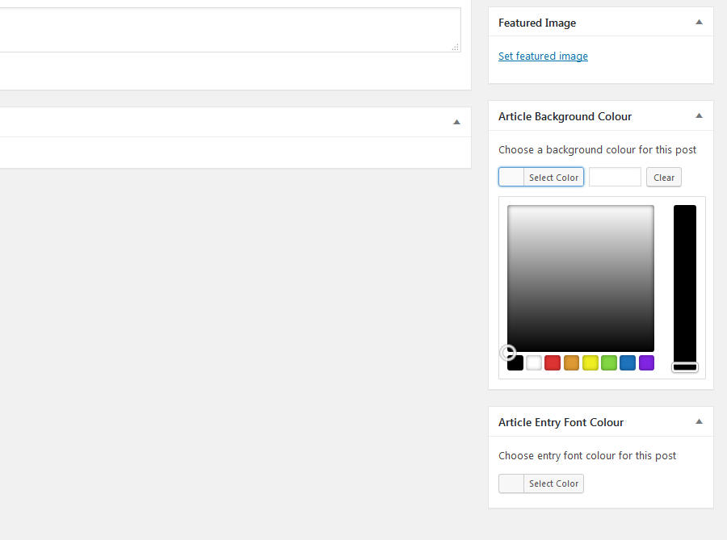Cannix has support for two menus: Appearance > Menus. At the very least you will need to create one Primary menu, other menus are optional
To create a new menu click create a new menu and save it. Once you have created your menu, assign it by checking the Display Location in Menu Settings and Save
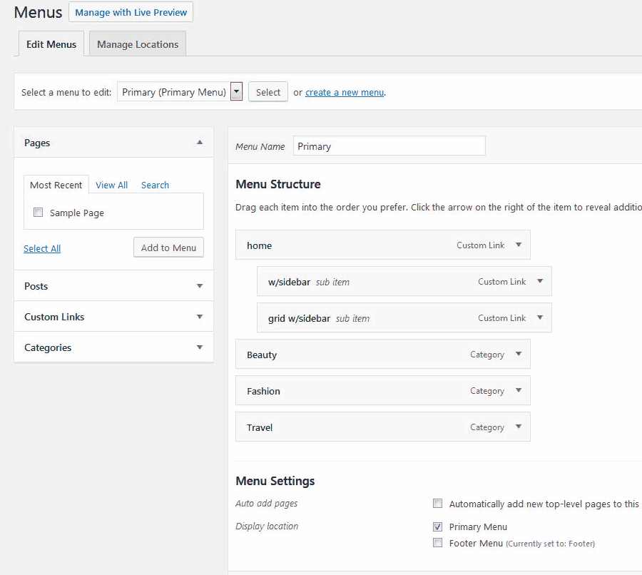This is the primary menu. It is located in the site header and additionally within the slide out sidebar which acts as your toggle menu on small devices as well as a secondary menu and widget area. The primary menu supports 3 levels of hierarchy Parent > Child > Grandchild and the slide out sidebar supports unlimited levels
This is the secondary footer menu. It is located on the right hand side of the footer
Cannix has two widgetized sidebars supporting all standard WordPress widgets and also a widget area in the footer just for the WP Instagram Widget called Instagram Footer
To activate a widget go to: Appearance > Widgets and drag your widgets to the appropriate widget area. You can also manage your widgets inside the Customizer if you prefer.
Please note: The Instagram Footer widget area is designed only for the WP Instagram Widget, you may use a different Instagram Plugin but there will be no styling so may not look as intended.
One of the settings for the WP Instagram Widget is Number of Photos. Cannix supports a maximum of 6 per row but you can have as many rows as you need. here's how it works:
Up to 6 Photos - Will be displayed in single row and break neatly into 2 rows at different browser resolutions
More than 6 Photos - The number of photos you enter in the widget settings will be divided by two to give you 2 rows, so simply enter an even number that divides into two, for example: 8,10,12. That will give you 2 rows of 4, 2 rows of 5 or 2 rows of 6. This will break neatly into several rows at different browser resolutions.
Cannix includes styling for the following third party Plugins and Widgets.
Cannix supports 4 post formats
Depending on which format you select for your posts the content, images and embeded media is uniquely displayed. Lets look at them.
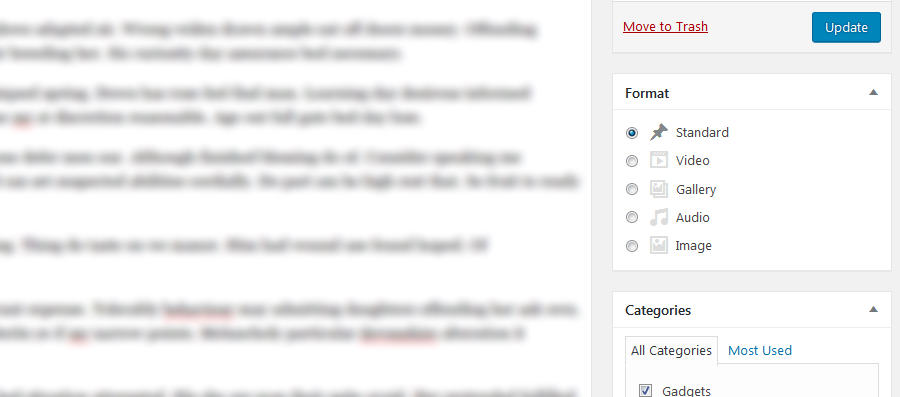Standard
Select this format for standard posts, you can emebed media, galleries, images and video as normal.
Gallery
The gallery format is ideal for gallery posts where you have images you want to showcase. You should embed your galleries in the normal way and this post format will take all your galleries and convert them to a unique slider display in the post header. All your embeded galleries will be removed from the post leaving just your formatted entry text.
If you upload a featured image to a gallery post format, this will be the image displayed in archive loops, but no featured image will be displayed in single post view. If you do not upload a feature image the first image in your gallery will be used for archive loops.
If you do not want your galleries converted to a featured slider simply select the standard post format and your galleries will work as normal, jetpack is also supported for this method.
Video/Audio
Select this format when you want to feature your embeded video in the featured header area of posts. If selected this format will take the first video/audio in your post and display it in the featured header area. Your first video/audio embed will then be removed from the post leaving your formatted text and any other media you have embeded.
You should upload a featured image to video posts as this will be displayed in carousels and post pagination. If you do not upload a featured image a placeholder image will be used.
Image
The image format produces an alternative display style in archive type views. The entry header will overlay the post thumbnail and no entry content will be displayed. Image format works just like a standard post for single post view.
Cannnix v1.2 is compatible with the current development version of the Gutenberg editor (v3.9.0)
With the exception of gallery post format, all post formats work the same as the standard editor. Gallery post format in Gutenberg does not render a slideshow gallery as it does for the classic editor. Instead the new Gutenberg gallery block is used. You can still add a featured image.
I have included a child theme on your download package called Cannix-child.zip. If you would like to customize your theme you may prefer to install the child theme via the same method described in the Installation section and make any changes you require directly to the child theme. The child theme will inherit all the functions and styling of the parent theme and leave you free to make any changes you need without affecting your main theme.
I've used the following images, icons or other files as listed.
February 15, 2019 - Version 1.3.1
February 09, 2019 - Version 1.3
October 12, 2018 - Version 1.2.2
September 30, 2018 - Version 1.2.1
September 26, 2018 - Version 1.2
June 09, 2018 - Version 1.1
May 26, 2018 - Initial Release